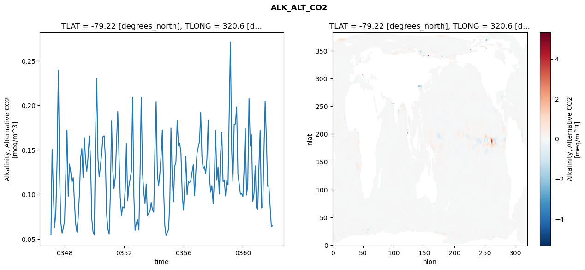
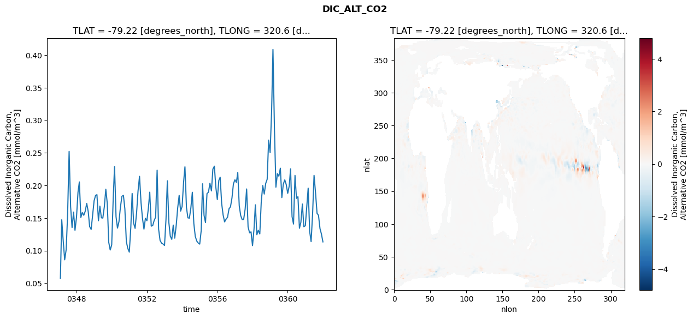
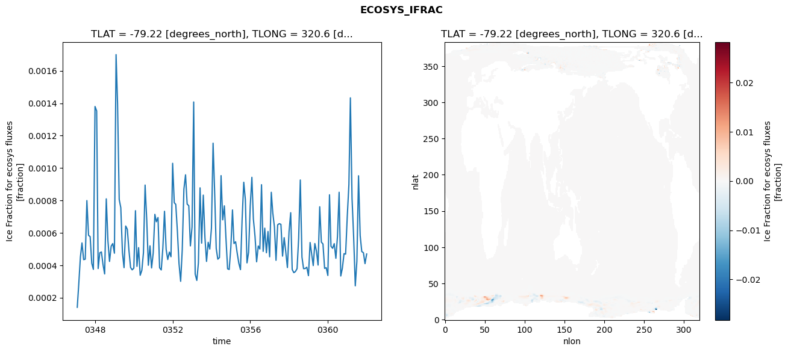
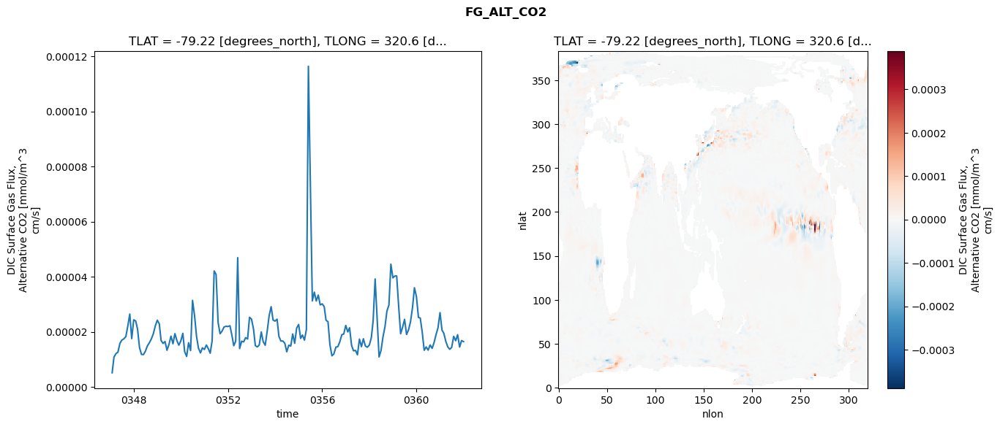

glb-dor_North_Atlantic_basin_010_1999-01-01_00040#
Simulation details#
Case: smyle.cdr-atlas-v0.glb-dor_North_Atlantic_basin_010_1999-01-01_00040.001
Basin: North_Atlantic_basin
Polygon: 10.0
Start date: 1999-01
Show code cell source Hide code cell source
import xarray as xr
import matplotlib.pyplot as plt
Show code cell source Hide code cell source
zarr_store = "/path/to/zarr/store"
# Parameters
zarr_store = "/global/cfs/projectdirs/m4746/Projects/Ocean-CDR-Atlas-v0/data/validation/smyle.cdr-atlas-v0.glb-dor_North_Atlantic_basin_010_1999-01-01_00040.001.validation.zarr"
Show code cell source Hide code cell source
%%time
ds_o = xr.open_zarr(zarr_store).compute()
ds_o
CPU times: user 671 ms, sys: 435 ms, total: 1.11 s
Wall time: 1.49 s
<xarray.Dataset> Size: 2MB
Dimensions: (nlat: 384, nlon: 320, time: 180)
Coordinates:
TLAT float64 8B -79.22
TLONG float64 8B 320.6
ULAT float64 8B -78.95
ULONG float64 8B 321.1
* time (time) object 1kB 0347-02-01 00:00:00 ... 0362-01-01 0...
z_t float32 4B 500.0
Dimensions without coordinates: nlat, nlon
Data variables:
ALK_ALT_CO2_diff (nlat, nlon) float32 492kB nan nan nan ... nan nan nan
ALK_ALT_CO2_rmse (time) float64 1kB 0.05483 0.1508 ... 0.06423 0.06509
DIC_ALT_CO2_diff (nlat, nlon) float32 492kB nan nan nan ... nan nan nan
DIC_ALT_CO2_rmse (time) float64 1kB 0.05712 0.1473 ... 0.1253 0.1133
ECOSYS_IFRAC_diff (nlat, nlon) float32 492kB nan nan nan ... nan nan nan
ECOSYS_IFRAC_rmse (time) float64 1kB 0.0001403 0.0002825 ... 0.0004695
FG_ALT_CO2_diff (nlat, nlon) float32 492kB nan nan nan ... nan nan nan
FG_ALT_CO2_rmse (time) float64 1kB 5.132e-06 1.084e-05 ... 1.644e-05xarray.Dataset
- nlat: 384
- nlon: 320
- time: 180
- TLAT()float64-79.22
- long_name :
- array of t-grid latitudes
- units :
- degrees_north
array(-79.22052261)
- TLONG()float64320.6
- long_name :
- array of t-grid longitudes
- units :
- degrees_east
array(320.56250892)
- ULAT()float64-78.95
- long_name :
- array of u-grid latitudes
- units :
- degrees_north
array(-78.95289509)
- ULONG()float64321.1
- long_name :
- array of u-grid longitudes
- units :
- degrees_east
array(321.12500894)
- time(time)object0347-02-01 00:00:00 ... 0362-01-...
- bounds :
- time_bound
- long_name :
- time
array([cftime.DatetimeNoLeap(347, 2, 1, 0, 0, 0, 0, has_year_zero=True), cftime.DatetimeNoLeap(347, 3, 1, 0, 0, 0, 0, has_year_zero=True), cftime.DatetimeNoLeap(347, 4, 1, 0, 0, 0, 0, has_year_zero=True), cftime.DatetimeNoLeap(347, 5, 1, 0, 0, 0, 0, has_year_zero=True), cftime.DatetimeNoLeap(347, 6, 1, 0, 0, 0, 0, has_year_zero=True), cftime.DatetimeNoLeap(347, 7, 1, 0, 0, 0, 0, has_year_zero=True), cftime.DatetimeNoLeap(347, 8, 1, 0, 0, 0, 0, has_year_zero=True), cftime.DatetimeNoLeap(347, 9, 1, 0, 0, 0, 0, has_year_zero=True), cftime.DatetimeNoLeap(347, 10, 1, 0, 0, 0, 0, has_year_zero=True), cftime.DatetimeNoLeap(347, 11, 1, 0, 0, 0, 0, has_year_zero=True), cftime.DatetimeNoLeap(347, 12, 1, 0, 0, 0, 0, has_year_zero=True), cftime.DatetimeNoLeap(348, 1, 1, 0, 0, 0, 0, has_year_zero=True), cftime.DatetimeNoLeap(348, 2, 1, 0, 0, 0, 0, has_year_zero=True), cftime.DatetimeNoLeap(348, 3, 1, 0, 0, 0, 0, has_year_zero=True), cftime.DatetimeNoLeap(348, 4, 1, 0, 0, 0, 0, has_year_zero=True), cftime.DatetimeNoLeap(348, 5, 1, 0, 0, 0, 0, has_year_zero=True), cftime.DatetimeNoLeap(348, 6, 1, 0, 0, 0, 0, has_year_zero=True), cftime.DatetimeNoLeap(348, 7, 1, 0, 0, 0, 0, has_year_zero=True), cftime.DatetimeNoLeap(348, 8, 1, 0, 0, 0, 0, has_year_zero=True), cftime.DatetimeNoLeap(348, 9, 1, 0, 0, 0, 0, has_year_zero=True), cftime.DatetimeNoLeap(348, 10, 1, 0, 0, 0, 0, has_year_zero=True), cftime.DatetimeNoLeap(348, 11, 1, 0, 0, 0, 0, has_year_zero=True), cftime.DatetimeNoLeap(348, 12, 1, 0, 0, 0, 0, has_year_zero=True), cftime.DatetimeNoLeap(349, 1, 1, 0, 0, 0, 0, has_year_zero=True), cftime.DatetimeNoLeap(349, 2, 1, 0, 0, 0, 0, has_year_zero=True), cftime.DatetimeNoLeap(349, 3, 1, 0, 0, 0, 0, has_year_zero=True), cftime.DatetimeNoLeap(349, 4, 1, 0, 0, 0, 0, has_year_zero=True), cftime.DatetimeNoLeap(349, 5, 1, 0, 0, 0, 0, has_year_zero=True), cftime.DatetimeNoLeap(349, 6, 1, 0, 0, 0, 0, has_year_zero=True), cftime.DatetimeNoLeap(349, 7, 1, 0, 0, 0, 0, has_year_zero=True), cftime.DatetimeNoLeap(349, 8, 1, 0, 0, 0, 0, has_year_zero=True), cftime.DatetimeNoLeap(349, 9, 1, 0, 0, 0, 0, has_year_zero=True), cftime.DatetimeNoLeap(349, 10, 1, 0, 0, 0, 0, has_year_zero=True), cftime.DatetimeNoLeap(349, 11, 1, 0, 0, 0, 0, has_year_zero=True), cftime.DatetimeNoLeap(349, 12, 1, 0, 0, 0, 0, has_year_zero=True), cftime.DatetimeNoLeap(350, 1, 1, 0, 0, 0, 0, has_year_zero=True), cftime.DatetimeNoLeap(350, 2, 1, 0, 0, 0, 0, has_year_zero=True), cftime.DatetimeNoLeap(350, 3, 1, 0, 0, 0, 0, has_year_zero=True), cftime.DatetimeNoLeap(350, 4, 1, 0, 0, 0, 0, has_year_zero=True), cftime.DatetimeNoLeap(350, 5, 1, 0, 0, 0, 0, has_year_zero=True), cftime.DatetimeNoLeap(350, 6, 1, 0, 0, 0, 0, has_year_zero=True), cftime.DatetimeNoLeap(350, 7, 1, 0, 0, 0, 0, has_year_zero=True), cftime.DatetimeNoLeap(350, 8, 1, 0, 0, 0, 0, has_year_zero=True), cftime.DatetimeNoLeap(350, 9, 1, 0, 0, 0, 0, has_year_zero=True), cftime.DatetimeNoLeap(350, 10, 1, 0, 0, 0, 0, has_year_zero=True), cftime.DatetimeNoLeap(350, 11, 1, 0, 0, 0, 0, has_year_zero=True), cftime.DatetimeNoLeap(350, 12, 1, 0, 0, 0, 0, has_year_zero=True), cftime.DatetimeNoLeap(351, 1, 1, 0, 0, 0, 0, has_year_zero=True), cftime.DatetimeNoLeap(351, 2, 1, 0, 0, 0, 0, has_year_zero=True), cftime.DatetimeNoLeap(351, 3, 1, 0, 0, 0, 0, has_year_zero=True), cftime.DatetimeNoLeap(351, 4, 1, 0, 0, 0, 0, has_year_zero=True), cftime.DatetimeNoLeap(351, 5, 1, 0, 0, 0, 0, has_year_zero=True), cftime.DatetimeNoLeap(351, 6, 1, 0, 0, 0, 0, has_year_zero=True), cftime.DatetimeNoLeap(351, 7, 1, 0, 0, 0, 0, has_year_zero=True), cftime.DatetimeNoLeap(351, 8, 1, 0, 0, 0, 0, has_year_zero=True), cftime.DatetimeNoLeap(351, 9, 1, 0, 0, 0, 0, has_year_zero=True), cftime.DatetimeNoLeap(351, 10, 1, 0, 0, 0, 0, has_year_zero=True), cftime.DatetimeNoLeap(351, 11, 1, 0, 0, 0, 0, has_year_zero=True), cftime.DatetimeNoLeap(351, 12, 1, 0, 0, 0, 0, has_year_zero=True), cftime.DatetimeNoLeap(352, 1, 1, 0, 0, 0, 0, has_year_zero=True), cftime.DatetimeNoLeap(352, 2, 1, 0, 0, 0, 0, has_year_zero=True), cftime.DatetimeNoLeap(352, 3, 1, 0, 0, 0, 0, has_year_zero=True), cftime.DatetimeNoLeap(352, 4, 1, 0, 0, 0, 0, has_year_zero=True), cftime.DatetimeNoLeap(352, 5, 1, 0, 0, 0, 0, has_year_zero=True), cftime.DatetimeNoLeap(352, 6, 1, 0, 0, 0, 0, has_year_zero=True), cftime.DatetimeNoLeap(352, 7, 1, 0, 0, 0, 0, has_year_zero=True), cftime.DatetimeNoLeap(352, 8, 1, 0, 0, 0, 0, has_year_zero=True), cftime.DatetimeNoLeap(352, 9, 1, 0, 0, 0, 0, has_year_zero=True), cftime.DatetimeNoLeap(352, 10, 1, 0, 0, 0, 0, has_year_zero=True), cftime.DatetimeNoLeap(352, 11, 1, 0, 0, 0, 0, has_year_zero=True), cftime.DatetimeNoLeap(352, 12, 1, 0, 0, 0, 0, has_year_zero=True), cftime.DatetimeNoLeap(353, 1, 1, 0, 0, 0, 0, has_year_zero=True), cftime.DatetimeNoLeap(353, 2, 1, 0, 0, 0, 0, has_year_zero=True), cftime.DatetimeNoLeap(353, 3, 1, 0, 0, 0, 0, has_year_zero=True), cftime.DatetimeNoLeap(353, 4, 1, 0, 0, 0, 0, has_year_zero=True), cftime.DatetimeNoLeap(353, 5, 1, 0, 0, 0, 0, has_year_zero=True), cftime.DatetimeNoLeap(353, 6, 1, 0, 0, 0, 0, has_year_zero=True), cftime.DatetimeNoLeap(353, 7, 1, 0, 0, 0, 0, has_year_zero=True), cftime.DatetimeNoLeap(353, 8, 1, 0, 0, 0, 0, has_year_zero=True), cftime.DatetimeNoLeap(353, 9, 1, 0, 0, 0, 0, has_year_zero=True), cftime.DatetimeNoLeap(353, 10, 1, 0, 0, 0, 0, has_year_zero=True), cftime.DatetimeNoLeap(353, 11, 1, 0, 0, 0, 0, has_year_zero=True), cftime.DatetimeNoLeap(353, 12, 1, 0, 0, 0, 0, has_year_zero=True), cftime.DatetimeNoLeap(354, 1, 1, 0, 0, 0, 0, has_year_zero=True), cftime.DatetimeNoLeap(354, 2, 1, 0, 0, 0, 0, has_year_zero=True), cftime.DatetimeNoLeap(354, 3, 1, 0, 0, 0, 0, has_year_zero=True), cftime.DatetimeNoLeap(354, 4, 1, 0, 0, 0, 0, has_year_zero=True), cftime.DatetimeNoLeap(354, 5, 1, 0, 0, 0, 0, has_year_zero=True), cftime.DatetimeNoLeap(354, 6, 1, 0, 0, 0, 0, has_year_zero=True), cftime.DatetimeNoLeap(354, 7, 1, 0, 0, 0, 0, has_year_zero=True), cftime.DatetimeNoLeap(354, 8, 1, 0, 0, 0, 0, has_year_zero=True), cftime.DatetimeNoLeap(354, 9, 1, 0, 0, 0, 0, has_year_zero=True), cftime.DatetimeNoLeap(354, 10, 1, 0, 0, 0, 0, has_year_zero=True), cftime.DatetimeNoLeap(354, 11, 1, 0, 0, 0, 0, has_year_zero=True), cftime.DatetimeNoLeap(354, 12, 1, 0, 0, 0, 0, has_year_zero=True), cftime.DatetimeNoLeap(355, 1, 1, 0, 0, 0, 0, has_year_zero=True), cftime.DatetimeNoLeap(355, 2, 1, 0, 0, 0, 0, has_year_zero=True), cftime.DatetimeNoLeap(355, 3, 1, 0, 0, 0, 0, has_year_zero=True), cftime.DatetimeNoLeap(355, 4, 1, 0, 0, 0, 0, has_year_zero=True), cftime.DatetimeNoLeap(355, 5, 1, 0, 0, 0, 0, has_year_zero=True), cftime.DatetimeNoLeap(355, 6, 1, 0, 0, 0, 0, has_year_zero=True), cftime.DatetimeNoLeap(355, 7, 1, 0, 0, 0, 0, has_year_zero=True), cftime.DatetimeNoLeap(355, 8, 1, 0, 0, 0, 0, has_year_zero=True), cftime.DatetimeNoLeap(355, 9, 1, 0, 0, 0, 0, has_year_zero=True), cftime.DatetimeNoLeap(355, 10, 1, 0, 0, 0, 0, has_year_zero=True), cftime.DatetimeNoLeap(355, 11, 1, 0, 0, 0, 0, has_year_zero=True), cftime.DatetimeNoLeap(355, 12, 1, 0, 0, 0, 0, has_year_zero=True), cftime.DatetimeNoLeap(356, 1, 1, 0, 0, 0, 0, has_year_zero=True), cftime.DatetimeNoLeap(356, 2, 1, 0, 0, 0, 0, has_year_zero=True), cftime.DatetimeNoLeap(356, 3, 1, 0, 0, 0, 0, has_year_zero=True), cftime.DatetimeNoLeap(356, 4, 1, 0, 0, 0, 0, has_year_zero=True), cftime.DatetimeNoLeap(356, 5, 1, 0, 0, 0, 0, has_year_zero=True), cftime.DatetimeNoLeap(356, 6, 1, 0, 0, 0, 0, has_year_zero=True), cftime.DatetimeNoLeap(356, 7, 1, 0, 0, 0, 0, has_year_zero=True), cftime.DatetimeNoLeap(356, 8, 1, 0, 0, 0, 0, has_year_zero=True), cftime.DatetimeNoLeap(356, 9, 1, 0, 0, 0, 0, has_year_zero=True), cftime.DatetimeNoLeap(356, 10, 1, 0, 0, 0, 0, has_year_zero=True), cftime.DatetimeNoLeap(356, 11, 1, 0, 0, 0, 0, has_year_zero=True), cftime.DatetimeNoLeap(356, 12, 1, 0, 0, 0, 0, has_year_zero=True), cftime.DatetimeNoLeap(357, 1, 1, 0, 0, 0, 0, has_year_zero=True), cftime.DatetimeNoLeap(357, 2, 1, 0, 0, 0, 0, has_year_zero=True), cftime.DatetimeNoLeap(357, 3, 1, 0, 0, 0, 0, has_year_zero=True), cftime.DatetimeNoLeap(357, 4, 1, 0, 0, 0, 0, has_year_zero=True), cftime.DatetimeNoLeap(357, 5, 1, 0, 0, 0, 0, has_year_zero=True), cftime.DatetimeNoLeap(357, 6, 1, 0, 0, 0, 0, has_year_zero=True), cftime.DatetimeNoLeap(357, 7, 1, 0, 0, 0, 0, has_year_zero=True), cftime.DatetimeNoLeap(357, 8, 1, 0, 0, 0, 0, has_year_zero=True), cftime.DatetimeNoLeap(357, 9, 1, 0, 0, 0, 0, has_year_zero=True), cftime.DatetimeNoLeap(357, 10, 1, 0, 0, 0, 0, has_year_zero=True), cftime.DatetimeNoLeap(357, 11, 1, 0, 0, 0, 0, has_year_zero=True), cftime.DatetimeNoLeap(357, 12, 1, 0, 0, 0, 0, has_year_zero=True), cftime.DatetimeNoLeap(358, 1, 1, 0, 0, 0, 0, has_year_zero=True), cftime.DatetimeNoLeap(358, 2, 1, 0, 0, 0, 0, has_year_zero=True), cftime.DatetimeNoLeap(358, 3, 1, 0, 0, 0, 0, has_year_zero=True), cftime.DatetimeNoLeap(358, 4, 1, 0, 0, 0, 0, has_year_zero=True), cftime.DatetimeNoLeap(358, 5, 1, 0, 0, 0, 0, has_year_zero=True), cftime.DatetimeNoLeap(358, 6, 1, 0, 0, 0, 0, has_year_zero=True), cftime.DatetimeNoLeap(358, 7, 1, 0, 0, 0, 0, has_year_zero=True), cftime.DatetimeNoLeap(358, 8, 1, 0, 0, 0, 0, has_year_zero=True), cftime.DatetimeNoLeap(358, 9, 1, 0, 0, 0, 0, has_year_zero=True), cftime.DatetimeNoLeap(358, 10, 1, 0, 0, 0, 0, has_year_zero=True), cftime.DatetimeNoLeap(358, 11, 1, 0, 0, 0, 0, has_year_zero=True), cftime.DatetimeNoLeap(358, 12, 1, 0, 0, 0, 0, has_year_zero=True), cftime.DatetimeNoLeap(359, 1, 1, 0, 0, 0, 0, has_year_zero=True), cftime.DatetimeNoLeap(359, 2, 1, 0, 0, 0, 0, has_year_zero=True), cftime.DatetimeNoLeap(359, 3, 1, 0, 0, 0, 0, has_year_zero=True), cftime.DatetimeNoLeap(359, 4, 1, 0, 0, 0, 0, has_year_zero=True), cftime.DatetimeNoLeap(359, 5, 1, 0, 0, 0, 0, has_year_zero=True), cftime.DatetimeNoLeap(359, 6, 1, 0, 0, 0, 0, has_year_zero=True), cftime.DatetimeNoLeap(359, 7, 1, 0, 0, 0, 0, has_year_zero=True), cftime.DatetimeNoLeap(359, 8, 1, 0, 0, 0, 0, has_year_zero=True), cftime.DatetimeNoLeap(359, 9, 1, 0, 0, 0, 0, has_year_zero=True), cftime.DatetimeNoLeap(359, 10, 1, 0, 0, 0, 0, has_year_zero=True), cftime.DatetimeNoLeap(359, 11, 1, 0, 0, 0, 0, has_year_zero=True), cftime.DatetimeNoLeap(359, 12, 1, 0, 0, 0, 0, has_year_zero=True), cftime.DatetimeNoLeap(360, 1, 1, 0, 0, 0, 0, has_year_zero=True), cftime.DatetimeNoLeap(360, 2, 1, 0, 0, 0, 0, has_year_zero=True), cftime.DatetimeNoLeap(360, 3, 1, 0, 0, 0, 0, has_year_zero=True), cftime.DatetimeNoLeap(360, 4, 1, 0, 0, 0, 0, has_year_zero=True), cftime.DatetimeNoLeap(360, 5, 1, 0, 0, 0, 0, has_year_zero=True), cftime.DatetimeNoLeap(360, 6, 1, 0, 0, 0, 0, has_year_zero=True), cftime.DatetimeNoLeap(360, 7, 1, 0, 0, 0, 0, has_year_zero=True), cftime.DatetimeNoLeap(360, 8, 1, 0, 0, 0, 0, has_year_zero=True), cftime.DatetimeNoLeap(360, 9, 1, 0, 0, 0, 0, has_year_zero=True), cftime.DatetimeNoLeap(360, 10, 1, 0, 0, 0, 0, has_year_zero=True), cftime.DatetimeNoLeap(360, 11, 1, 0, 0, 0, 0, has_year_zero=True), cftime.DatetimeNoLeap(360, 12, 1, 0, 0, 0, 0, has_year_zero=True), cftime.DatetimeNoLeap(361, 1, 1, 0, 0, 0, 0, has_year_zero=True), cftime.DatetimeNoLeap(361, 2, 1, 0, 0, 0, 0, has_year_zero=True), cftime.DatetimeNoLeap(361, 3, 1, 0, 0, 0, 0, has_year_zero=True), cftime.DatetimeNoLeap(361, 4, 1, 0, 0, 0, 0, has_year_zero=True), cftime.DatetimeNoLeap(361, 5, 1, 0, 0, 0, 0, has_year_zero=True), cftime.DatetimeNoLeap(361, 6, 1, 0, 0, 0, 0, has_year_zero=True), cftime.DatetimeNoLeap(361, 7, 1, 0, 0, 0, 0, has_year_zero=True), cftime.DatetimeNoLeap(361, 8, 1, 0, 0, 0, 0, has_year_zero=True), cftime.DatetimeNoLeap(361, 9, 1, 0, 0, 0, 0, has_year_zero=True), cftime.DatetimeNoLeap(361, 10, 1, 0, 0, 0, 0, has_year_zero=True), cftime.DatetimeNoLeap(361, 11, 1, 0, 0, 0, 0, has_year_zero=True), cftime.DatetimeNoLeap(361, 12, 1, 0, 0, 0, 0, has_year_zero=True), cftime.DatetimeNoLeap(362, 1, 1, 0, 0, 0, 0, has_year_zero=True)], dtype=object) - z_t()float32500.0
- long_name :
- depth from surface to midpoint of layer
- positive :
- down
- units :
- centimeters
- valid_max :
- 537500.0
- valid_min :
- 500.0
array(500., dtype=float32)
- ALK_ALT_CO2_diff(nlat, nlon)float32nan nan nan nan ... nan nan nan nan
- cell_methods :
- time: mean
- grid_loc :
- 3111
- long_name :
- Alkalinity, Alternative CO2
- units :
- meq/m^3
array([[ nan, nan, nan, ..., nan, nan, nan], [ nan, nan, nan, ..., nan, nan, nan], [0.01098633, 0.02075195, 0.03027344, ..., nan, nan, nan], ..., [ nan, nan, nan, ..., nan, nan, nan], [ nan, nan, nan, ..., nan, nan, nan], [ nan, nan, nan, ..., nan, nan, nan]], dtype=float32) - ALK_ALT_CO2_rmse(time)float640.05483 0.1508 ... 0.06423 0.06509
- cell_methods :
- time: mean
- grid_loc :
- 3111
- long_name :
- Alkalinity, Alternative CO2
- units :
- meq/m^3
array([0.05483483, 0.15084083, 0.1008707 , 0.0632018 , 0.08075854, 0.13766415, 0.23956653, 0.12052278, 0.06833891, 0.05691643, 0.06244105, 0.07040104, 0.12240687, 0.17242434, 0.09813796, 0.13424853, 0.12573877, 0.11367489, 0.11901611, 0.09072488, 0.06687132, 0.05786067, 0.07400025, 0.10048694, 0.14157356, 0.15163431, 0.11937057, 0.16385678, 0.13744191, 0.12595754, 0.14209589, 0.16566169, 0.13806568, 0.07273898, 0.05828341, 0.05473878, 0.16136978, 0.23067621, 0.14091662, 0.11981546, 0.13200296, 0.1457841 , 0.1649735 , 0.16583101, 0.14010156, 0.07788088, 0.06151106, 0.0554934 , 0.10245716, 0.18262556, 0.127681 , 0.10648813, 0.11959563, 0.15865863, 0.19343679, 0.14194399, 0.0962488 , 0.07686859, 0.0862815 , 0.08493438, 0.10633852, 0.15739823, 0.09324233, 0.1091794 , 0.11772385, 0.12593809, 0.20910366, 0.09734361, 0.05999645, 0.06861583, 0.07191171, 0.06033093, 0.12820676, 0.20889679, 0.12439169, 0.10288884, 0.09025195, 0.1117728 , 0.07658986, 0.07922652, 0.08144815, 0.09103764, 0.08296941, 0.08026459, 0.15226472, 0.20443484, 0.12273589, 0.10973743, 0.12346023, 0.14353526, 0.1723422 , 0.10632975, 0.06514712, 0.05386123, 0.05766004, 0.06092695, 0.09289527, 0.17465458, 0.11760535, 0.0920954 , 0.13181305, 0.13620103, 0.18291293, 0.15470649, 0.1577135 , 0.14669344, 0.10241633, 0.08238657, 0.10736193, 0.14296467, 0.09979282, 0.11447182, 0.11344962, 0.11569496, 0.12534951, 0.13357076, 0.09875651, 0.12569401, 0.14641095, 0.15369955, 0.15968677, 0.19215195, 0.14202926, 0.12879614, 0.13175383, 0.12348487, 0.14046896, 0.18343629, 0.11980952, 0.10269651, 0.10996178, 0.08952525, 0.11793337, 0.17186931, 0.11607209, 0.13102192, 0.10070431, 0.14427743, 0.1696313 , 0.11452907, 0.11621247, 0.09851789, 0.11557885, 0.1110686 , 0.19710311, 0.27131563, 0.1489143 , 0.1146607 , 0.17884552, 0.17924414, 0.1983939 , 0.12245118, 0.11269039, 0.10045763, 0.10123387, 0.09780122, 0.13079163, 0.17407406, 0.09964779, 0.11119142, 0.20770328, 0.15454626, 0.16715977, 0.09222585, 0.10097517, 0.13230307, 0.08503902, 0.08344105, 0.13394914, 0.17210702, 0.08503571, 0.08621292, 0.14532731, 0.2049435 , 0.16250835, 0.10924005, 0.11001247, 0.08637171, 0.0642301 , 0.06509252]) - DIC_ALT_CO2_diff(nlat, nlon)float32nan nan nan nan ... nan nan nan nan
- cell_methods :
- time: mean
- grid_loc :
- 3111
- long_name :
- Dissolved Inorganic Carbon, Alternative CO2
- units :
- mmol/m^3
array([[ nan, nan, nan, ..., nan, nan, nan], [ nan, nan, nan, ..., nan, nan, nan], [0.00976562, 0.0168457 , 0.03686523, ..., nan, nan, nan], ..., [ nan, nan, nan, ..., nan, nan, nan], [ nan, nan, nan, ..., nan, nan, nan], [ nan, nan, nan, ..., nan, nan, nan]], dtype=float32) - DIC_ALT_CO2_rmse(time)float640.05712 0.1473 ... 0.1253 0.1133
- cell_methods :
- time: mean
- grid_loc :
- 3111
- long_name :
- Dissolved Inorganic Carbon, Alternative CO2
- units :
- mmol/m^3
array([0.05711857, 0.14729089, 0.11457141, 0.08583476, 0.10152621, 0.15597301, 0.25226539, 0.16729479, 0.13540153, 0.15906616, 0.13118705, 0.15121348, 0.18943357, 0.20545633, 0.15082079, 0.15833591, 0.15421143, 0.16040213, 0.17251423, 0.16000932, 0.13679122, 0.13245727, 0.1538765 , 0.17648331, 0.18481096, 0.18583086, 0.14579372, 0.16823836, 0.15037795, 0.14992581, 0.16732743, 0.19432011, 0.17253043, 0.11260717, 0.1008801 , 0.10866934, 0.17937085, 0.22902755, 0.15195791, 0.13450585, 0.14458254, 0.16670422, 0.18335195, 0.18484595, 0.16401906, 0.1134549 , 0.10337483, 0.09763584, 0.13521846, 0.18778963, 0.14210332, 0.13410854, 0.15789659, 0.1912854 , 0.21404455, 0.17387679, 0.14969644, 0.1330165 , 0.14951113, 0.14578588, 0.16548617, 0.1897033 , 0.13754221, 0.13839108, 0.1462999 , 0.15121368, 0.22346102, 0.13274909, 0.11555724, 0.11145161, 0.11014367, 0.10789236, 0.14817758, 0.20718313, 0.14330957, 0.12213942, 0.11721043, 0.13916381, 0.11910605, 0.13888964, 0.16519559, 0.18478876, 0.16060299, 0.1677494 , 0.20523398, 0.22864391, 0.16626441, 0.15031985, 0.14979082, 0.16516946, 0.189568 , 0.14157644, 0.12182394, 0.11463029, 0.11164702, 0.10991152, 0.13079746, 0.20255008, 0.15410293, 0.14306085, 0.1875543 , 0.18954108, 0.20341 , 0.19164248, 0.22509313, 0.22964185, 0.19747622, 0.17837815, 0.20765784, 0.21275528, 0.17241413, 0.15482666, 0.14404946, 0.14821664, 0.15114271, 0.16422816, 0.16717071, 0.1808686 , 0.2024874 , 0.20874894, 0.20469384, 0.21985445, 0.16859921, 0.15374579, 0.14752358, 0.14772875, 0.16360994, 0.19465117, 0.13642801, 0.12718359, 0.12880617, 0.10759448, 0.13297962, 0.17028851, 0.12437113, 0.13111952, 0.12555483, 0.17465926, 0.19996195, 0.1868355 , 0.20301174, 0.20956535, 0.26963193, 0.25046959, 0.31434124, 0.40887112, 0.28571186, 0.19739071, 0.21814759, 0.21427002, 0.22648295, 0.18138089, 0.20195783, 0.20859043, 0.20139945, 0.18790379, 0.19912665, 0.22555774, 0.15210963, 0.14076347, 0.21544949, 0.18021657, 0.1827042 , 0.13430005, 0.14352638, 0.17147003, 0.1366682 , 0.13811712, 0.16891961, 0.1958976 , 0.12931563, 0.11370964, 0.15682538, 0.21551416, 0.18856489, 0.15727349, 0.15419171, 0.13379795, 0.1253237 , 0.11334124]) - ECOSYS_IFRAC_diff(nlat, nlon)float32nan nan nan nan ... nan nan nan nan
- cell_methods :
- time: mean
- grid_loc :
- 2110
- long_name :
- Ice Fraction for ecosys fluxes
- units :
- fraction
array([[ nan, nan, nan, ..., nan, nan, nan], [ nan, nan, nan, ..., nan, nan, nan], [2.0956993e-04, 1.5830994e-04, 4.6014786e-05, ..., nan, nan, nan], ..., [ nan, nan, nan, ..., nan, nan, nan], [ nan, nan, nan, ..., nan, nan, nan], [ nan, nan, nan, ..., nan, nan, nan]], dtype=float32) - ECOSYS_IFRAC_rmse(time)float640.0001403 0.0002825 ... 0.0004695
- cell_methods :
- time: mean
- grid_loc :
- 2110
- long_name :
- Ice Fraction for ecosys fluxes
- units :
- fraction
array([0.00014026, 0.00028253, 0.0004508 , 0.00053775, 0.00043438, 0.0004375 , 0.00079897, 0.00058415, 0.00057708, 0.00041192, 0.00037465, 0.00137979, 0.00135268, 0.00037956, 0.00047679, 0.00048186, 0.00040339, 0.0003462 , 0.00080981, 0.00055089, 0.0004235 , 0.00051753, 0.00053371, 0.00047414, 0.00170019, 0.00139783, 0.00080573, 0.00075518, 0.00047688, 0.00038488, 0.00064216, 0.00062151, 0.00049231, 0.00038605, 0.00037148, 0.00038204, 0.00073669, 0.0003929 , 0.00050841, 0.00033804, 0.00036833, 0.00047734, 0.0008948 , 0.00067947, 0.00039968, 0.00051965, 0.00038312, 0.00047644, 0.00071408, 0.00066837, 0.00069453, 0.00038421, 0.00037097, 0.0005059 , 0.00073298, 0.0004981 , 0.00043505, 0.00048115, 0.00045244, 0.00102913, 0.00078581, 0.00077561, 0.00060773, 0.00041051, 0.00030071, 0.00049491, 0.00086964, 0.00095808, 0.00077756, 0.0007673 , 0.00051933, 0.00063643, 0.00140774, 0.00034554, 0.00030608, 0.00041535, 0.00087772, 0.00053633, 0.00083265, 0.00056894, 0.00042351, 0.00054157, 0.0004998 , 0.00062849, 0.00115344, 0.00086597, 0.00050358, 0.00043736, 0.00044763, 0.00095311, 0.0006801 , 0.00076672, 0.00056822, 0.00037798, 0.00037378, 0.00051022, 0.00074123, 0.00053415, 0.00054471, 0.00047387, 0.00041106, 0.00037297, 0.00068276, 0.00091214, 0.00080609, 0.00041461, 0.00047958, 0.00076674, 0.00094255, 0.00068604, 0.00057708, 0.00042117, 0.00051868, 0.00050021, 0.00089712, 0.00048543, 0.00062876, 0.00047699, 0.00060842, 0.00045205, 0.00085018, 0.0007233 , 0.00063666, 0.00043033, 0.00064953, 0.00065643, 0.00065243, 0.0004561 , 0.00057021, 0.00048111, 0.00038563, 0.00060825, 0.00072421, 0.00037394, 0.00035416, 0.00036087, 0.000379 , 0.00056763, 0.00092611, 0.00045055, 0.00037876, 0.00037977, 0.00038777, 0.00033573, 0.00054039, 0.00047295, 0.0003979 , 0.00053392, 0.00048613, 0.00040097, 0.00076081, 0.00054267, 0.00053113, 0.00038051, 0.00038478, 0.0003369 , 0.00083474, 0.0005167 , 0.0005045 , 0.00053337, 0.00044262, 0.00057885, 0.00085038, 0.00033359, 0.00038153, 0.00047124, 0.00046862, 0.00069989, 0.00089794, 0.00143314, 0.00081168, 0.00057752, 0.00027265, 0.00042396, 0.00095224, 0.00058319, 0.00048435, 0.00047749, 0.00040995, 0.00046948]) - FG_ALT_CO2_diff(nlat, nlon)float32nan nan nan nan ... nan nan nan nan
- cell_methods :
- time: mean
- grid_loc :
- 2110
- long_name :
- DIC Surface Gas Flux, Alternative CO2
- units :
- mmol/m^3 cm/s
array([[ nan, nan, nan, ..., nan, nan, nan], [ nan, nan, nan, ..., nan, nan, nan], [-5.6965519e-08, 3.9065071e-09, 1.0507165e-08, ..., nan, nan, nan], ..., [ nan, nan, nan, ..., nan, nan, nan], [ nan, nan, nan, ..., nan, nan, nan], [ nan, nan, nan, ..., nan, nan, nan]], dtype=float32) - FG_ALT_CO2_rmse(time)float645.132e-06 1.084e-05 ... 1.644e-05
- cell_methods :
- time: mean
- grid_loc :
- 2110
- long_name :
- DIC Surface Gas Flux, Alternative CO2
- units :
- mmol/m^3 cm/s
array([5.13201935e-06, 1.08367613e-05, 1.20879651e-05, 1.26121609e-05, 1.57946350e-05, 1.69897720e-05, 1.74533694e-05, 1.82478778e-05, 2.20409069e-05, 2.64463033e-05, 1.75385973e-05, 2.43542164e-05, 2.39077740e-05, 2.10390286e-05, 1.42611876e-05, 1.17998480e-05, 1.17416183e-05, 1.29507462e-05, 1.49041976e-05, 1.60624464e-05, 1.74074139e-05, 1.92968900e-05, 2.21269942e-05, 2.42076238e-05, 2.29243167e-05, 1.68610874e-05, 1.57762940e-05, 1.64759656e-05, 1.33052215e-05, 1.54209002e-05, 1.84393212e-05, 1.56626144e-05, 1.93316809e-05, 1.68067459e-05, 1.51499347e-05, 1.67157003e-05, 1.94468801e-05, 1.28231047e-05, 1.10578929e-05, 1.60504280e-05, 1.32035516e-05, 3.14095668e-05, 2.60303699e-05, 1.83650068e-05, 1.40902004e-05, 1.23409700e-05, 1.41797396e-05, 1.35839481e-05, 1.52113952e-05, 1.39601889e-05, 1.22312355e-05, 1.68151832e-05, 4.20957323e-05, 4.08031099e-05, 2.34603973e-05, 1.92877945e-05, 2.02399184e-05, 2.17264462e-05, 2.20144341e-05, 2.19126055e-05, 2.22091500e-05, 1.89742334e-05, 1.49427844e-05, 1.66104081e-05, 4.69022054e-05, 1.39444499e-05, 1.65923255e-05, 1.63297832e-05, 1.78731939e-05, 1.73935439e-05, 2.52836075e-05, 2.45767029e-05, 2.09840494e-05, 1.49927538e-05, 1.45154610e-05, 1.52362163e-05, 1.99367692e-05, 1.64014767e-05, 1.51223303e-05, 2.02519369e-05, ... 1.16380392e-04, 7.42010733e-05, 3.12207163e-05, 3.43971438e-05, 3.11812726e-05, 3.33400103e-05, 2.97733871e-05, 3.01383145e-05, 2.91365588e-05, 2.42251913e-05, 2.36357729e-05, 1.52183433e-05, 1.12878880e-05, 1.19973558e-05, 1.44355577e-05, 1.46341889e-05, 1.63880385e-05, 1.89488489e-05, 1.92119695e-05, 2.23222539e-05, 1.99549459e-05, 2.14751045e-05, 1.50845608e-05, 1.31022485e-05, 1.32571595e-05, 1.16665461e-05, 1.73626764e-05, 1.45976128e-05, 1.74884844e-05, 1.48595900e-05, 1.44040386e-05, 1.52015584e-05, 1.78538726e-05, 2.40143620e-05, 3.91832728e-05, 2.54892937e-05, 1.08735813e-05, 1.31908280e-05, 1.81806969e-05, 2.19256883e-05, 2.75513228e-05, 2.97698213e-05, 4.45402056e-05, 3.95838384e-05, 4.02568671e-05, 4.02510120e-05, 2.91050325e-05, 1.92955074e-05, 2.17216430e-05, 2.45365189e-05, 1.90286921e-05, 2.07389015e-05, 2.36483680e-05, 2.87788350e-05, 3.59907474e-05, 3.27726907e-05, 2.52262557e-05, 2.50060733e-05, 1.97908467e-05, 1.33005682e-05, 1.45018786e-05, 1.33557800e-05, 1.52377336e-05, 1.39841718e-05, 1.60894507e-05, 1.90101777e-05, 2.14580630e-05, 2.69523767e-05, 2.06155319e-05, 1.94792531e-05, 1.65253746e-05, 1.45440724e-05, 1.36531100e-05, 1.43571441e-05, 1.83542583e-05, 1.67502279e-05, 1.89493741e-05, 1.44630434e-05, 1.68352025e-05, 1.64449794e-05])
- timePandasIndex
PandasIndex(CFTimeIndex([0347-02-01 00:00:00, 0347-03-01 00:00:00, 0347-04-01 00:00:00, 0347-05-01 00:00:00, 0347-06-01 00:00:00, 0347-07-01 00:00:00, 0347-08-01 00:00:00, 0347-09-01 00:00:00, 0347-10-01 00:00:00, 0347-11-01 00:00:00, ... 0361-04-01 00:00:00, 0361-05-01 00:00:00, 0361-06-01 00:00:00, 0361-07-01 00:00:00, 0361-08-01 00:00:00, 0361-09-01 00:00:00, 0361-10-01 00:00:00, 0361-11-01 00:00:00, 0361-12-01 00:00:00, 0362-01-01 00:00:00], dtype='object', length=180, calendar='noleap', freq='MS'))
Show code cell source Hide code cell source
variables = [v[:-5] for v in ds_o.variables if "_rmse" in v]
Show code cell source Hide code cell source
plt.rcParams.update({'figure.max_open_warning': 0})
for v in variables:
fig, axs = plt.subplots(1, 2, figsize=(15, 6))
ds_o[f"{v}_rmse"].plot(ax=axs[0])
ds_o[f"{v}_diff"].plot(ax=axs[1])
plt.suptitle(v, fontweight="bold")



